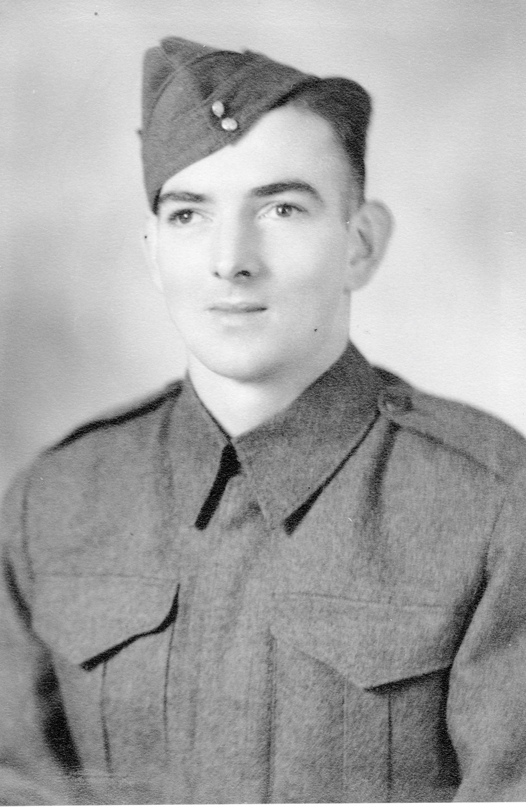
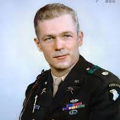

BY: ALAN GRATZ
BY: ALAN GRATZ
This book directly fits into the D-Day invasion, World War II, and Holocasut because the entire book is centered around the categories, it talks about the D-Day invasion and D-Day happened during World War II and overlapped with the Holocasut as well.

1. D-Day. D-Day is the day that our allied forces invaded Northern France.
2. French Resistance. A group of men that tried to stop the D-Day invasion.
3. Querrilla Warfare. A form of unconventional war.
4. Bigotry. Stubborn about your opinion
5. Allied Invasion. When allied forces invade a country, this is most typically reffered to as the D-Day invasion.
1.
2.
3.
4.
5.
1.
2.
3.
4.
5.
1.
2.
3.
4.
5.
The main conflict in the book is the D-Day invasion.

Dee Carpenter is a 16-year-old boy who is going into the war for D-Day his real name is Deitrich Zimmerman he was born in germany but then escaped he then joined the army to fight the Nazis.

Some traits for Dee are courageous, cooperative, and idealistic. We know that he is courageous because in the book he volunteers for life risking missions, one was a suicide mission, he was carrying a bomb to a german tank to protect his team. We also know he is cooperative because he always helps sid out, he helped french people climb into a ship to save french people. He also is idealistic because in the book he forged documents to continue fight the war proving he belives everything will be okay no matter what showing hes very idealistic.
Samira Zidane is a 11-year old girl living in German occupied France. her mother has been captured by the german soldiers and now samira wants to warn french resistance that the invasion is starting.

Some traits for Samira are courageous, quick thinking, and brave. We can see she is courageous becasue event though her mother is captured she continues going with her mission on warning French resistance. We can can see she is quick thinking becasue in one part of the book she gets caught by German soldiers she pretends to be a lost girl crying about a missing cat, this distracts a soldier, they then let her go. In the book samira crawls through grass right next to German patrol to plant explosives on the tracks, this shows she is brave.
Sid Jacobstein is Dee's friend. He is also a part of the fighter in the D-Day invasion.

Some traits for Henry are selfless, hero, and talented. We know he is selfless because even though he is a medic, he stays out in the open on the beach to treat wounded soldiers instead of looking for cover. We also know he is a hero because he runs directly into the line of fire to save people who are hurt, risking his own life every time he goes back out there. He also is talented because he is able to perform medical procedures and help people with really bad injuries while bombs are going off, showing he is very talented at being a medic.
Henry is black and nobody answers him because of his race he is also a sargent.

Some traits for Henry are selfless, hero, and talented. We know he is selfless because even though he is a medic and doesnt have to be in the middle of the fighting he stays on the beach to save as many soldiers as he can instead of hiding. We also know he is a hero because he risks his life constantly to drag wounded people to safety while bullets are flying everywhere around him. He also is talented because he is a very good medic who knows exactly how to treat bad injuries under pressure which helps save a lot of lives during the invasion showing he is very talented at his job.
James is a 19 year old Canadian Mercenary, he joined the army to overcome his past years were was bullied a lot.

Some traits for James are motivated, resourceful, and moral. We know he is motivated because he is determined to find his father and will do whatever it takes to reach him, which keeps him moving forward despite the danger of the war. We also know he is resourceful because he is able to find ways to navigate through the chaos of the invasion and use the things around him to survive and complete his goals. He also is moral because he tries to do the right thing even when things are difficult, showing that he cares about his values and the people he meets along the way.
Monique is a 13 year old French girl, she has an interest in medicine.
.jpg)
Some traits for Monique are compasionate, fearful, and courageous. We know she is compasionate because she risks herself to hide and help soldiers who are hurt, showing she cares more about helping people than her own safety. We also know she is fearful because she is a young girl caught in the middle of a massive war and she is terrified of the nazis and what they might do to her or her family. She also is courageous because even though she is scared, she still chooses to stand up and do the right thing by assisting the resistance, proving that being courageous is about acting even when you are afraid.
Bill is a 19 year old British tank driver, he uses humor to cope with the horrors of the battle he fought and went through.

Some traits for Bill are cheerful, supporting, and humorous. We know he is cheerful because even though he is in the middle of a scary invasion, he keeps a positive attitude and tries to stay upbeat to help everyone else feel better. We also know he is supporting because he is always there to encourage the other soldiers and give them the strength they need to keep moving forward during the battle. He also is humorous because he tells jokes and uses funny comments to break the tension, showing he is humorous even when things are really intense.
In the book Allies, Dee has determination for going into D-day and it shows that teamwork is essential for overcome tough situations and challenges.
1. Why is there a 16 year-old in the military when the minimum age is 18?
2. Why was Samia's mother captured?
3. How did they capture Samira's mother?
1. How will Samira warn French Resistance?
2. Will Dee survive D-Day?
3. Will Samira mother escape/survive?
1. [ ]
2. [ ]
3. [ ]
1. [ ]
2. [ ]
3. [ ]